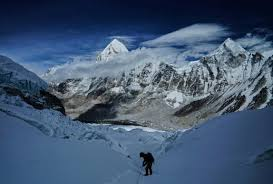

The World’s Highest Environment
Mount Everest is one of the most extreme natural environments on Earth. Located in the Himalayas between Nepal and Tibet, it reaches an altitude of 8,848.86 meters above sea level, where atmospheric pressure and oxygen levels drop to dangerously low levels.
This environment pushes the human body to its absolute limits, making survival extremely difficult without specialized equipment and careful preparation.
Extreme Environmental Conditions
Temperatures on Everest can fall below -60°C during winter storms, while wind speeds can exceed hurricane levels. These conditions can cause frostbite within minutes of exposure.
At extreme altitudes, oxygen levels are only about one-third of those at sea level. This forces climbers to use supplemental oxygen systems to survive in the “Death Zone.”
Geological Formation
Mount Everest is part of the Himalayan mountain range, formed by the collision between the Indian and Eurasian tectonic plates. This process is still active today, meaning Everest continues to grow slowly every year.
Geologists estimate the Himalayas formed around 50 to 60 million years ago, making Everest relatively young in Earth’s geological timeline.
Wildlife and Ecosystem
Lower regions of Everest support a fragile ecosystem including snow leopards, Himalayan tahr, red pandas, and yaks. These animals are specially adapted to survive in cold, oxygen-poor environments.
Above 6,000 meters, life becomes nearly impossible due to extreme cold, lack of oxygen, and constant harsh weather conditions.
Key Scientific Data
| Category | Information |
|---|---|
| Height | 8,848.86 meters |
| First Ascent | 1953 (Hillary & Norgay) |
| Location | Nepal / Tibet (Himalayas) |
| Death Zone | Above 8,000 meters |
| Temperature | Below -60°C in extreme conditions |
